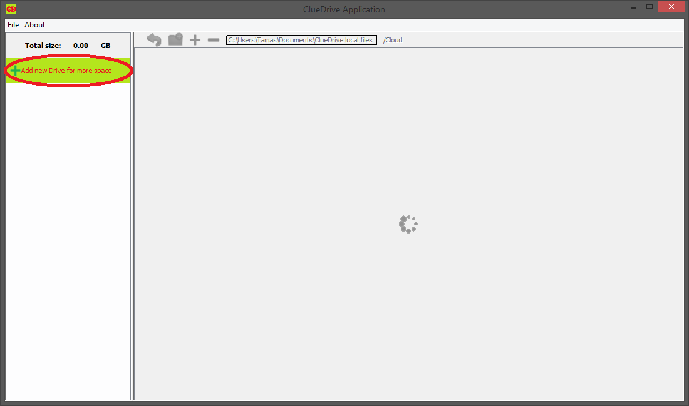
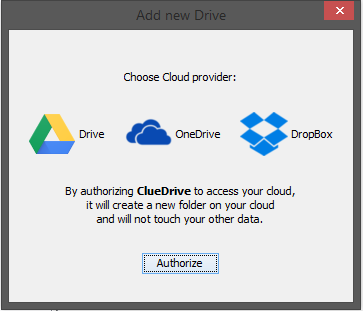

How to start using application
To use the application, you will need java 8 JRE, browser, and cloud storage accounts on Dropbox, Google Drive, or Microsoft Onedrive.
Once you have the application jar: cluedrive-application-1.0.jar Double click and wait a little to start.
Don't know what to do after application started
Here is the "welcome" screen after first. Click on the marked spot. Add new drive, and you can enjoy using the application. Create folders, upload files. Dowlnoad them later on...
Adding new drives
You can add new drives by clicking the Add new Drive for more space or opening the File -> Add new Drive menu, on the menu bar.
Eigther way you choose, the next window will open, where you can chooose provider:
